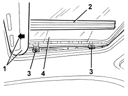

7030B18 SLIDING ROOF GLASS PANEL - R+R
- Path
- Procedures > 70 FITTINGS > 7030 SUN ROOF/GLASS PANEL > 7030B SLIDING ROOF > 7030B18 SLIDING ROOF GLASS PANEL - R+R
- Kind
- repair procedure (removal / refitting; the operation number is the code)
- Applies to
- all engines; all production periods
- Interactive page
- https://sloeber94.github.io/elrnDB/alfa/159/en/#/939004826
Applies to: all engines; all production periods
 Removing
Removing
 Refitting
Refitting1. Open the sun blind.
2. Working on both sides, release the protection.
3. Undo the bolts.
4. Remove the transparent panel.

Applies to: all engines; all production periods
Refitting
Removing- Check that the glass is not damaged.
- Reposition the transparent panel.
- Screw in the bolts without tightening them.
Topics linked from this page (1)
Topics that link to this page (7)
- Q005 SUN ROOF STICKING
- Q006 SUN ROOF DOES NOT STOP IN END OF TRAVEL POSITION
- S076 SUN ROOF NOISY / WITH ROOF CLOSED
- 7030B14 SLIDING ROOF - DISMANTLE AND REBUILD WITH ASSEMBLY REMOVED
- 7030B28 SLIDING ROOF BLIND - R+R
- 7030B38 SLIDING ROOF DRAINAGE PIPES (WATER DRAIN) - CHECK
- 7030B54 SUN ROOF (ASSEMBLY) - ALIGNMENT AND POSITIONING